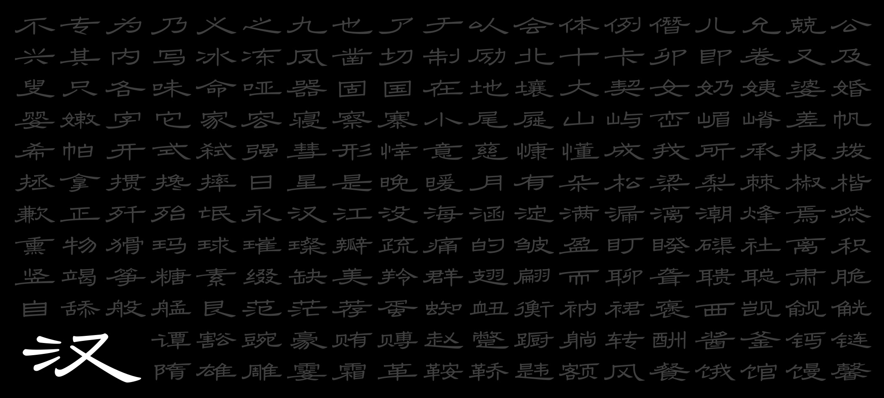

CY Type｜虫鱼爬字
Previous
Next

Scripts
Hanzi, Latin
Award
The 6th Hanyi Font Star Design Competition Chinese Type Student Category First Prize
Foundry
Hanyi Fonts (unreleased)
Designers
Yue CHEN, Congyu ZHANG
Period
September 2025 to present
Details
Project specimens will be added here.
Previous: Youran Lihei
Next: Jingzhe An